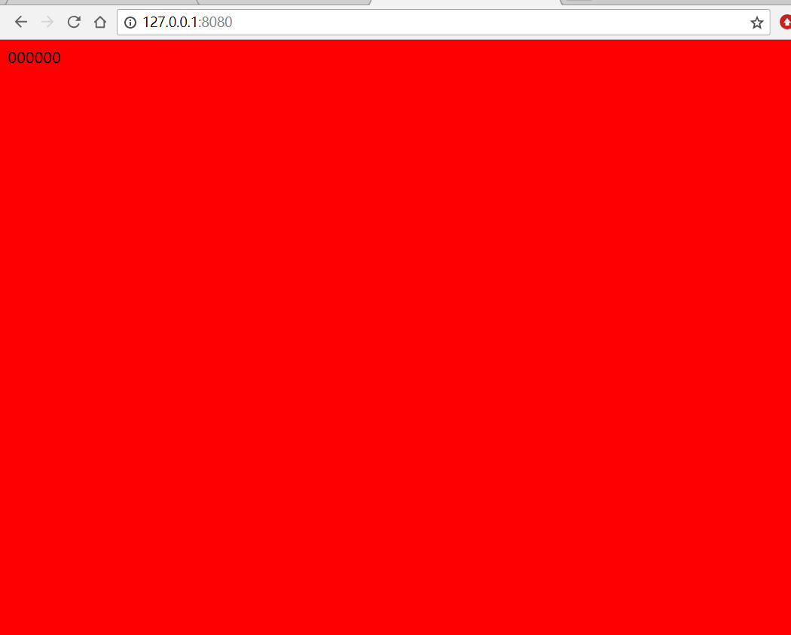

原文连接:https://www.cnblogs.com/jinfeixiang/p/10974896.html
本次小编呢，为大家带来一篇深入了解打包工具 webpack。
我们今天使用的是 webpack3.8.1版本的，我们学习使用 3.8.1更稳定些，并学习自己如何配置文件，最新版本不需要自己配置文件，但我们需要知道配置文件的原理
最新版本的webpack已经更新到 4.32.2版本了
首先介绍以下什么是 webpack：
webpack它是一个前端资源加载或打包工具。资源(如：img css js json等)
1.首先第一步就是配置 配置模板说明文件 package.json
2.第二步就是下载webpack
全局下载：npm install -g webpack@3.8.1
局部下载：npm install webpack@3.8.1 --save -dev
不加-g 就是局部安装
注意：尽量全局和局部都安装，因为下载之后先找局部安装，局部找不到才去找全局，使用为了方便起见最好都安装，安装好后全局安装在c盘里，局部安装在当前目录下有一个node_modules文件。如果全局安装不用带 --save -dev局部安装需要带。
3.第三步
1.打包js文件
指令 webpack 入口文件 出口文件
可以看到报错，这时候就需要我们去打包了
我们每次改变js里的内容都需要打包webpack 入口文件和出口文件非常麻烦，如果我们只想使用 webpack这个指令，就需要提前打包，需要配置 webpack.config.js
webpack 会有一个默认配置文件叫webpack.config.js
可以看到我们可以成功打包文件了，如果我们只想输出 webpack 这个指令就可以打包文件，就需要配置文件，现在我们开始配置文件。
Entry：用于指定打包的文件
Output：用于指定打包后的文件
Build/build.js表示将app文件夹中的index.js 打包到build文件夹中的build.js中。
为什么我仅仅使用 webpack指令就可以打包呢？
如果不配置webkit输出webkit就会报错：说没有配置文件，找不到。配置文件名必须命名为 webpack.config.js 在这个项目的文件夹下。如果你想使用webpack，webpack就会默认去找一个webpack.config.js的配置文件，通过这个配置文件进行转换
__dirname 是onde的一个全局变量，获取当前文件所在目录完整目录名
可以看到这样就可以使用了
module.exports={//暴露文件
entry:"./index.js",//被打包文件，当前目录
output:{ //打包后文件的出口路径，打包完放在那里
path:__dirname+"/mod2", //路径,把打包后的文件放在mod2目录下面,__dirname当前目录
filename:"bundle.js" //文件名
},
}
2.打包css文件
我们下一汇总就执行css样式就打包变成粉色，如果之间打包会报错，需要下载依赖包。
loader：依赖包
css转成js
less转成js
json转成js
img转成js
这种转最后都放在js文件里，就需要依赖包 loader就解决这些问题
css文件打包到js中 需要css-loader style-loader
首先下载css
npm install style-loader css-loader --save -dev
module.exports={//暴露文件
entry:"./index.js",//被打包文件，当前目录
output:{ //打包后文件的出口路径，打包完放在那里
path:__dirname+"/mod2", //路径,把打包后的文件放在mod2目录下面,__dirname当前目录
filename:"./bundle.js" //文件名
},
module:{ //需要依赖的模块(包)
loaders:[ //依赖的包
{
test:/\.css$/,//凡是以css结尾的文件 都使用useloader
loader:"style-loader!css-loader"
//顺序不能写反
}
]
}
}
配置完指令后 指令就是简单的 webpack
第三步每改一次js文件，就打包一下 webpack
添加热加载 改完一个文件保存后 打包就会自动刷新
Webpack-dev-server是一个轻量级的服务器，修改文件源码后，自动刷新页面将修改同步页面上。
需要全局安装：
全局安装：npm install -g webpack-dev-sever@2.9.4
局部安装：npm install --save-dev webpack-dev-server@2.9.4

在css修改颜色保存后就会自动更新了，注意一定在8080端口打开
直接使用 webpack-dev-server 启动就行
但是这种启动只是启动服务器，但是不能自动刷新
另一种启动 webpack-dev-server --hot -inline
既可以启动服务器也可以让浏览器自动刷新
配置启动指令 默认启动指令是：webpack-dev-server --hot -inline
启动一个简单的：直接在package.json里面配置启动项，如vue等框架都是这样启动的。
这个就是在服务器生成的虚拟文件 bundle.js，这是由出口文件决定的，由你决定。但是和index.html 是同目录同级别
此时没有把这个 bundle.js生成是虚拟的，正常路径应该是以相对路径引入开发时是以虚拟文件开发，开发完后才打包然后以相对来讲引入。
引入关系需要注意

作者：晋飞翔
手机号(微信同步)：17812718961 欢迎大家一起探索web前端